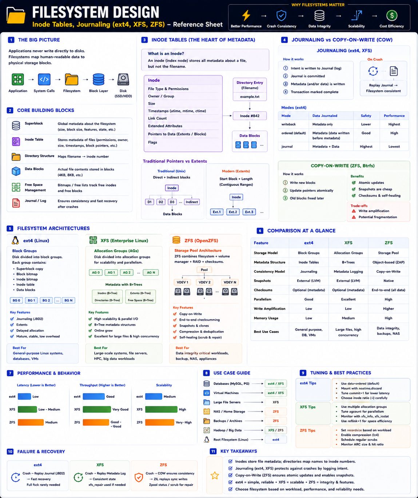

Inode tables, journaling — ext4, XFS, ZFS — Staff Engineer level
The Big Picture
Applications never write directly to disks. Data flows through the filesystem, which determines data organization, crash recovery, metadata speed, allocation efficiency, fragmentation, and scalability.
Filesystem Architecture
Inode — File Metadata Container
Every file has one inode. The inode stores metadata — not the filename.
Inode contains
Lookup chain
Multiple filenames (hard links) can point to the same inode.
Data Blocks & Extents
File contents live in data blocks. Modern filesystems use extents instead of individual block pointers.
Block pointers (old)
Extents (modern)
Crash Consistency Problem
Two solutions:
Journaling (ext4, XFS)
Copy-on-Write (ZFS)
ext4 Journaling Modes
| Mode | Journals | Performance | Safety |
|---|---|---|---|
| Writeback | Metadata only | ⭐⭐⭐⭐⭐ | ⭐⭐ |
| Ordered (default) | Data written before metadata | ⭐⭐⭐⭐ | ⭐⭐⭐⭐ |
| Journal | Metadata + Data | ⭐⭐ | ⭐⭐⭐⭐⭐ |
Ordered mode is the default — best balance of safety and performance.
Three Filesystem Architectures
ext4 — Block Groups
Journaling via JBD2, extents, delayed allocation. Mature, low overhead, general-purpose.
XFS — Allocation Groups
B+Trees for extents, directories, free space. Parallel allocations, minimal contention — scales to petabytes.
ZFS — Storage Pool + COW
Every block has a checksum. Detects bit rot, silent corruption. Snapshots are native and instant.
Performance Comparison
| Feature | ext4 | XFS | ZFS |
|---|---|---|---|
| Storage Model | Block Groups | Allocation Groups | Storage Pool |
| Consistency | Journaling (JBD2) | Metadata Logging | Copy-on-Write |
| Metadata | Inode Tables | B+Trees | Object-based (Dnodes) |
| Snapshots | External (LVM) | External (LVM) | Native ⭐ |
| Checksums | Limited | Limited | End-to-End ⭐ |
| Parallel Writes | Good | Excellent ⭐ | High |
| Memory Usage | Low ⭐ | Medium | High |
| Write Amplification | Low | Low | Higher (COW) |
Real-World Examples
| Workload | Filesystem | Reason |
|---|---|---|
| MySQL / PostgreSQL | ext4 or XFS | fsync, low latency, predictable journaling |
| Hadoop (HPC) | XFS | Parallel writes, B+Tree scalability |
| NAS / Backup | ZFS | Snapshots, checksums, self-healing |
| Kubernetes worker node | ext4 | Simple, stable, low overhead |
| Storage appliance | ZFS | End-to-end integrity, compression |
Staff Engineer Thinking
Junior
Which filesystem is faster?
Senior
Should we use ext4 or XFS?
Staff asks
Production Failure Scenarios
Long fsck Time
Cause: Large ext4 filesystem, dirty journal · Fix: Use journaling correctly, monitor filesystem health
Metadata Bottleneck
Cause: Millions of parallel file creates on ext4 · Fix: Switch to XFS with multiple Allocation Groups
Silent Data Corruption
Cause: Disk bit rot on ext4/XFS · Fix: Use ZFS with checksumming + periodic scrubs
Slow Snapshot Operations
Cause: LVM snapshots on ext4/XFS · Fix: Use native ZFS snapshots
High Memory Usage
Cause: ZFS ARC consuming all RAM · Fix: Tune zfs_arc_max based on available memory
Staff Engineer Decision Framework
| Requirement | Recommended |
|---|---|
| General Linux Server | ext4 |
| High Parallel Writes | XFS |
| Enterprise NAS | ZFS |
| Database Server | ext4 / XFS |
| VM Images | XFS / ZFS |
| Data Integrity Critical | ZFS |
| Simple Administration | ext4 |
| Snapshot-heavy Workloads | ZFS |
| HPC / Hadoop | XFS |
Production Debugging Checklist
iostat -x 1df -ifsck / xfs_repair / zpool statusKey Takeaways
